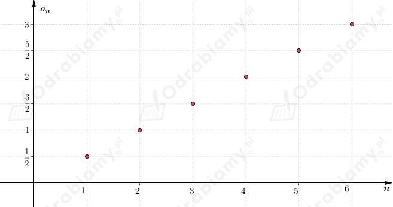
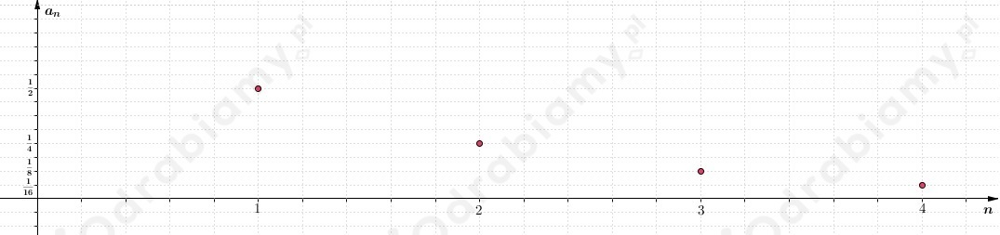
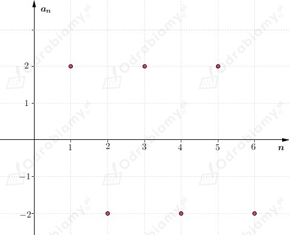
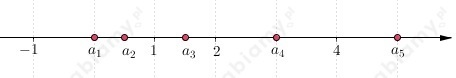
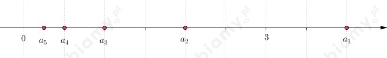
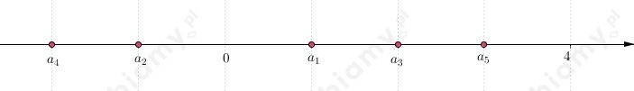

Na rysunku A został przedstawiony wykres ciągu kolejnych liczb parzystych:
Na rysunku B został przedstawiony wykres ciągu stałego:
Niech
an - ciąg kolejnych liczb parzystych przedstawiony na rysunku A
bn - ciąg stały przedstawiony na rysunku B
Możemy odczytać, że
Dostajemy
a)
Wykres ciągu:

b)
Wykres ciągu:

c)
Wykres ciągu:

a)
Zaznaczamy na osi liczbowej pięć początkowych wyrazów ciągu, czyli wyrazy

b)
Zaznaczamy na osi liczbowej pięć początkowych wyrazów ciągu, czyli wyrazy

c)
Zaznaczamy na osi liczbowej pięć początkowych wyrazów ciągu, czyli wyrazy
